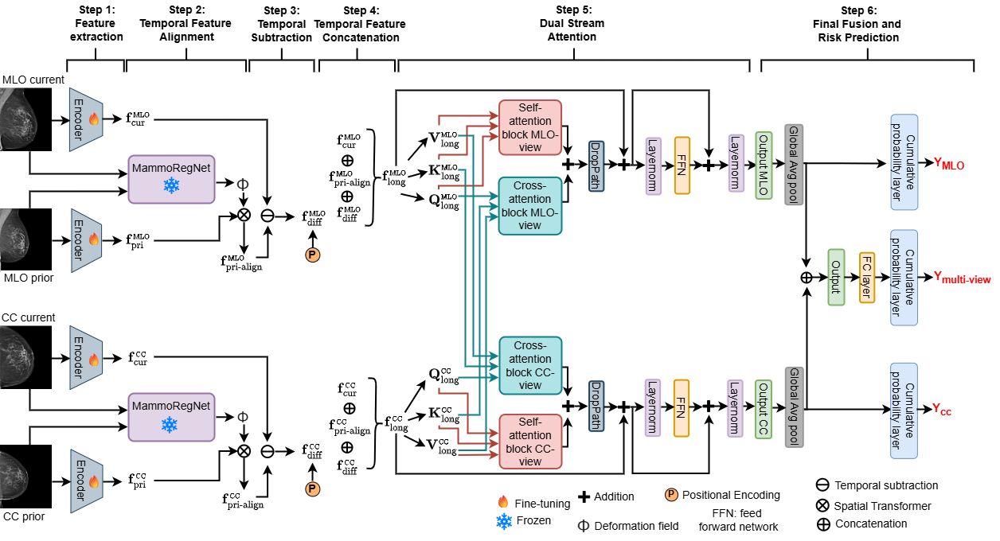

LMV-Net
📌 Overview
LMV-Net (Longitudinal Multi-View Network) is a deep learning model for breast cancer risk prediction from mammography. It jointly models multi-view imaging (CC, MLO) and longitudinal information (current and prior exams) to produce risk estimates over multiple future time horizons.
The model integrates temporal alignment, cross-view feature fusion, and multi-head risk prediction within a unified framework.
🧠 Key Idea
LMV-Net is built around three core ideas:
- Longitudinal alignment: Previous mammography feature maps are spatially aligned to current mammogrpahy feature maps using a registration network (MammoRegNet) to enable meaningful temporal comparison
- Cross-view fusion: CC and MLO views are iteratively fused using self-attention and cross-attention mechanism
- Multi-level prediction: Risk is predicted at both view-specific and fused multi-view levels
This design allows the model to capture both temporal changes and cross-view consistency.
🏗️ Architecture

The model consists of three main components:
1. Longitudinal Feature Processing
- Uses a shared encoder to extract feature maps from each view across both time points
- Applies a registration network (e.g., MammoRegNet) to align prior feature maps with current feature maps
- Computes difference features by subtracting aligned prior features from current features
- Concatenates current, aligned prior, and difference features to form a unified longitudinal feature representation for each view prior, and difference feature to obtain a longitudinal feature vector for each view
2. Multi-View Dual Stream-Attention
- Performs self-attention and corss-attention within each view
- Iteratively exchanges information between CC and MLO features
- Enhances view consistency and complementary feature learning
3. Multi-View Fusion and Risk Prediction
- Global average pooling applied to each view
- Feature vectors concatenated and passed through a linear layer
- Produces a fused multi-view representation
- Shared cumulative probability layer
- Outputs:
- Multi-view risk prediction
- CC-only risk prediction
- MLO-only risk prediction
🔄 Input / Output
Input
The model expects a batch dictionary with:
current_image_cc: Current CC view[B, 1, H, W]previous_image_cc: Prior CC view[B, 1, H, W]current_image_mlo: Current MLO view[B, 1, H, W]previous_image_mlo: Prior MLO view[B, 1, H, W]time_gap: Time between exams[B, 1]target: Risk labels[B, num_years]y_mask: Valid label mask[B, num_years]
Output
The forward method returns a dictionary containing:
risk_multi: Multi-view fused risk logits[B, num_years]risk_cc: CC-only risk logits[B, num_years]risk_mlo: MLO-only risk logits[B, num_years]
These outputs are consumed by two helper methods:
get_risk_heads(outputs, batch)
Uses the outputs fromforwardto construct(logits, target, mask)tuples for each prediction head:multi: Usesrisk_multiwithtargetandy_maskcc: Usesrisk_ccwithtargetandy_maskmlo: Usesrisk_mlowithtargetandy_mask
This enables multi-head supervision, encouraging both view-specific learning and improved fused predictions.
get_primary_risk_head(outputs)
Uses the outputs fromforwardto return the final prediction for evaluation, defined as:sigmoid(risk_multi)
This represents the model’s primary risk estimate, based on fused multi-view information.
🧩 Integration in This Framework
LMV-Net is implemented as a subclass of BaseRiskModel and:
- Uses the shared data interface
- Supports longitudinal multi-view inputs
- Produces multiple risk heads for multi-task training
- Uses a unified evaluation pipeline via the primary risk head
⚙️ Key Components
- LongitudinalFeatureProcessor: Handles temporal feature alignment using registration
- Multi-View Dual Stream-Attention Block: Performs cross-view feature fusion using self-attention and cross-attention
- Continuous Positional Encoding: Injects time-gap information into difference features
- CumulativeProbabilityLayer: Outputs risk over time horizons
- Freezing Mechanism: : Allows pretrained encoder to be frozen during training
📉 Risk Prediction
- Risk is modeled as cumulative probability over time
- Multiple heads allow:
- View-specific supervision
- Improved training stability